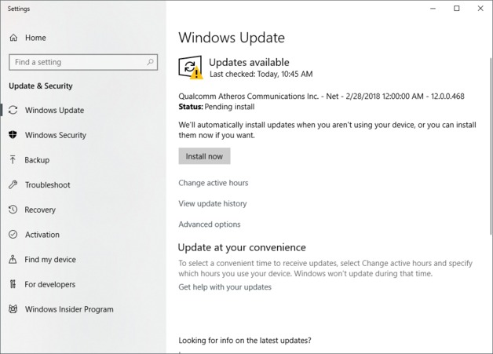
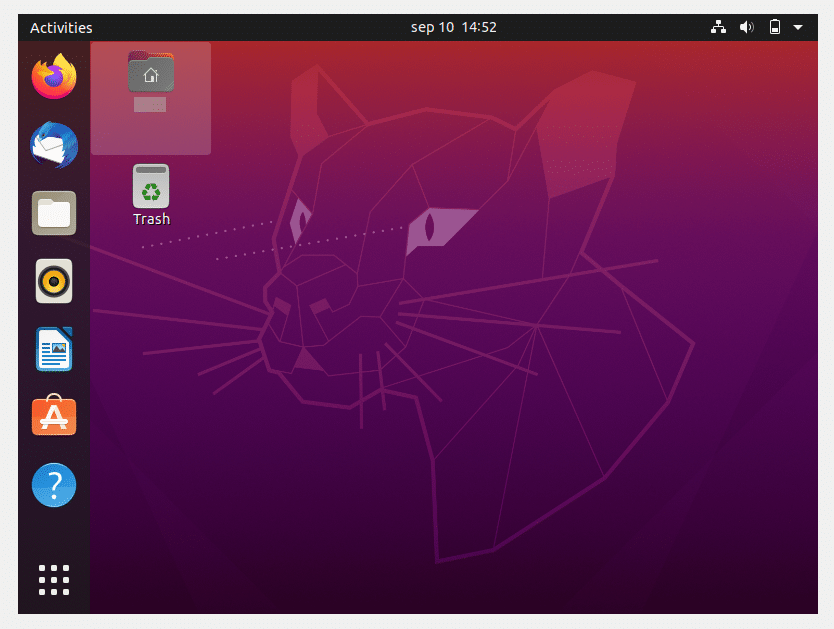

Place You must visit in Sri lanka
Sri Lanka, also known as the Pearl of the Indian Ocean, is a small yet stunning island nation located in South Asia. It is a country that boasts a rich cultural heritage, diverse landscapes, and warm hospitality. From the golden sandy beaches to the lush green forests and ancient temples, Sri Lanka has something for everyone. One of the most attractive features of Sri Lanka is its natural beauty. The country is home to numerous national parks and wildlife reserves where visitors can spot a range of animals and birds. The Sigiriya Rock Fortress and the ancient city of Anuradhapura are two of the most iconic historical sites in Sri Lanka. The delicious cuisine, friendly locals, and a tropical climate make Sri Lanka a must-visit destination for all types of travelers. In conclusion, Sri Lanka is a beautiful country that offers a unique and unforgettable experience to anyone who visits. Its rich history, natural beauty, and welcoming locals make it an ideal destination for anyone seeking adventure, relaxation, or cultural enrichment. visit
How to install windows 10

A computer cannot function without an operating system, so installing Windows 10 is a critical step that every non-Mac user should know how to do. Of course, most devices come pre-configured out of the box, which means Windows is preinstalled and you don’t need to worry about adding the OS manually. However, there are occasions when you might need to install Windows 10 yourself visit. If you're running another operating system or setting up a new PC, you can easily install Windows 10 from an installation disc or USB flash drive. Upgrading from an earlier version like Windows 7 or 8.1 is even easier—no flash drive or DVD required! This wikiHow article will walk you through installing or upgrading to Windows 10 on any PC.
what is kms
Key Management Service (KMS) is a feature in Microsoft Windows operating systems that allows organizations to activate their Windows installations in a more efficient and centralized manner. KMS enables a server to act as a host for multiple activation requests from client computers, without the need for individual activation keys for each client. This means that organizations can activate multiple computers on their network simultaneously, using a single KMS host and a set of client computers that are configured to use the KMS activation method.
learn morehow to disable windows 10 update permanently
disable Windows Update on your Windows operating system. However, I would like to note that disabling Windows Update can leave your system vulnerable to security risks and may cause stability issues.
gowhat is Ubuntu
Ubuntu is a popular free and open-source operating system based on the Linux kernel. It is one of the most popular Linux distributions, known for its user-friendly interface, stability, and security. Ubuntu is maintained by Canonical Ltd. and is released in a new version every six months, with long-term support (LTS) versions released every two years. It comes with a wide range of software pre-installed, including web browsers, office productivity tools, multimedia software, and development tools. Ubuntu is used by individuals, businesses, and organizations around the world for desktop, server, and cloud computing purposes. click hear to know about how to install ubuntu
Spice

Spices have been an integral part of human civilization for centuries. They are used to add flavor, aroma, and color to food, as well as for their medicinal properties. Spices are derived from various parts of plants, such as seeds, roots, bark, and fruits, and are used in cuisines around the world. Some of the most commonly used spices include cinnamon, cumin, coriander, turmeric, cloves, and nutmeg. The use of spices has also played a significant role in the global trade and exchange of cultures. Today, spices continue to be a beloved part of our culinary traditions and an essential ingredient in many dishes. see more
Artificial intelligence
AI, or Artificial Intelligence, is a transformative technology that is changing the way we live and work. AI refers to machines or software that can learn, reason, and perform tasks that typically require human intelligence. This technology has applications across a wide range of industries, including healthcare, finance, transportation, and education. Machine learning, a subset of AI, allows machines to learn and improve over time, becoming more efficient and effective at performing tasks. While there are concerns about job displacement and ethical concerns around bias and transparency, the potential benefits of AI are vast. As we continue to develop and refine this technology, it's crucial to ensure that it's used in ways that benefit society as a whole. see more